CS184/284A Spring 2026 Homework 1
Link to webpage: cal-cs184-student.github.io/hw-webpages-nadahameed
Link to GitHub repository: github.com/cal-cs184-student/hw1-rasterizer-nada
Overview
This assignment, I build the 2D rasterization pipeline that was mentioned in class and the textbook. My rasterizer can render images from SVG files. I started by building a simpler rasterizer that went from triangle to pixels, and gradually built on that through several tasks. I incorporated transformations as well as various antialiasing techniques like supersampling, barycentric coordinates (interpolation), and level sampling. I also added texture mapping. I learned how to improve the quality of an svg but also how to make one myself and add my own shapes and modifications.
From this assignment, I learned about the rasterization pipeline but also how to make small improvements that can have a big impact as a whole. In lecture, when we learn about all these small antialiasing techniques or all these artifact problems, you don't think too much about how important they are, but it's pretty interesting to actually see the difference after supersampling for example, from your own rasterizer. Especially in task 6, you can see quality shifts clearly, so I found that interesting. As I was doing the assignment, I also learned about other methods for the sake of efficiency. The textbook mentioned using the midpoint test to check if a point is in a triangle, and I think it's cool to see how people have tried different things and these are the methods we end up implementing.
Task 1: Drawing Single-Color Triangles
Generally, rasterization takes as input 3 points of a triangle, and the output is a set of pixel values approximating the triangle. The basic algorithm I followed is to iterate through all the points in the bounding box of the given triangle (aka the smallest rectangle you can form covering the triangle), and then for each point, check if it is inside the triangle. To perform this inside check, I used the three line test. If it passed this check, then you fill the pixel at that point with the input color.
To start, I found the bounding box of my input triangle via the minimums and maximums of the triangle points. The bounding box is helpful because then, when we are iterating through pixels, we are not looking at points that are for sure out of bounds of the triangle. So my algorithm is no worse than one that checks each sample within the bounding box of the triangle because that is precisely what it does. Then, I iterated through all the x and y values within my bounding box. For each pair (x,y), I checked if it was inside the triangle with my helper function, inside().
My inside() function is an implementation of the three line test, and it checks if (x,y) is in triangle t. I implemented this by going through all the triangle coordinate pairs, and then, using the line formulas from lecture, I computed the 3 lines that made up the triangle. I used this formula: \(L_i(x,y) = -(x-X_i) * dY_i + (y - Y_i) * dX_i\). After finding these three lines, I checked if they were all greater than or equal to 0, or less than or equal to 0. Typically, greater than or equal to zero would be the check to see if a point is inside an edge (which is our goal, we want our point to be inside all three edges), but I had to deal with winding order, which is whether the vertices are drawn clockwise or counterclockwise. To deal with this, I had two checks to see if a point was inside the triangle. Either all three lines were greater than or equal to zero (clockwise motion), or they were all less than or equal to zero (counterclockwise).
Finally, back in rasterize_triangle(), as I was iterating through the points, if the current pixel (x,y) was inside the triangle, I used fill_pixel() to fill the pixel (x,y) with the color (which was a parameter in the original function).
Here are a few images generated with the rasterizer.

|
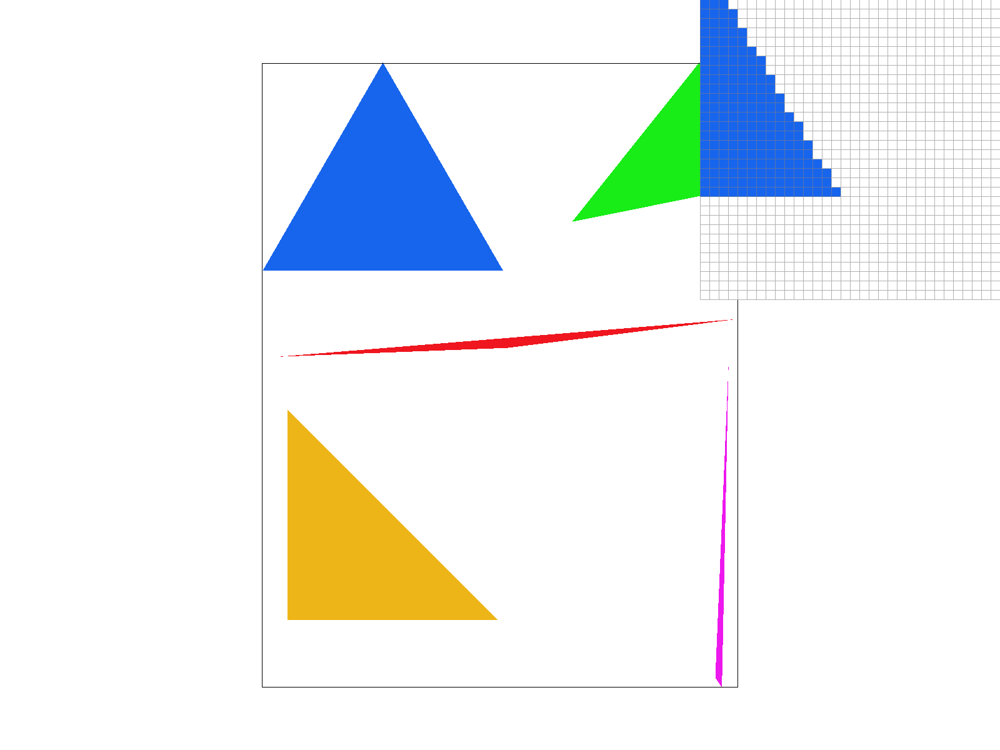 |

|

|
Extra credit
To make my rasterizer run faster, I implemented incremental triangle traversal. Originally, I would be recomputing my line functions for every pixel with my inside() helper function. However, an interesting observation to make is that you can also rasterize by checking pixels based on their neighboring pixels. If you notice with the line equations, if we make a change to the x or y in L(x, y), the value changes by a constant.
Use line equation: \(L(x,y) = Ai * x + Bi * y + Ci\) Then notice that \(L(x + 1, y) = Ai * x + Bi * y + Ci + Ai = L(x, y) + A\) Also notice that \(L(x, y + 1) = Ai * x + Bi * y + Ci + Bi = L(x, y) + B\)
So instead of recomputing the line values every iteration, which slows down the rasterization function, we can just do it once, and then just add the constant. I removed calls to my inside() helper, and instead did the computations throughout my iterations. I computed dx and dy for each pair of points, and then computed the values of L(x,y) at the edge of the bounding box, so that as we started to iterate, we could add to these edge values. During the iterations themselves, I modified the current line function, and used that to check if the point was inside the triangle.
| Test Number | Normal | Optimized |
|---|---|---|
| Test 3 | 19 ms | 15 ms |
| Test 4 | 5 ms | 5 ms |
| Test 5 | 9 ms | 7 ms |
| Test 6 | 8 ms | 5 ms |
Via the table, we can see that incremental triangle traversal speeds up the rasterization algorithm I was using before.
Task 2: Antialiasing by Supersampling
Supersampling is a technique to reduce aliasing (jagged edges) by sampling multiple points within each pixel and averaging their colors. Instead of coloring a pixel based on a single sample, take several samples (which, in our code, is defined by sample_rate), compute their colors, and average them to get the final pixel color. This smooths out edges and transitions. The main idea of supersampling is to rasterize at a higher resolution (via more samples per pixels) and then downsampling/averaging to the desired resolution.
Supersampling is useful because before, our rasterizer would produce jagged edges, or aliasing. This happens when high-frequency signals are sampled at a low frequency. But by sampling many locations within a pixel, we can see how much of a pixel is covered by a triangle. So when rendering, the color will be some triangle color, some background color, and our eyes will see that as a smooth edge instead of a jagged one.
To implement supersampling with my code, I had to add/change these things:
- First, we need to deal with memory allocation. Since we are sampling and thus storing many more values, I resized sample_buffer to be width * height * sample_rate. In supersampling, sample_buffer represents our high-resolution rasterization that we will eventually lower. I resized to accommodate for the extra pixels from supersampling.
- Then, in rasterize_triangle(), I actually implemented the supersampling. We were already looping over pixels in the bounding box (from task 1). Now, for each pixel in the triangle, I divide it into a grid of subsamples, so into a sqrt(sample_rate) by sqrt(sample_rate) grid. I calculated the sub pixel coordinates (sx, sy) and for each sub pixel, I checked if it was inside the triangle. If yes, its color is recorded in sample_buffer. This overwrote some of the logic I had implemented for incremental triangle traversals.
- Finally, I had to resolve the supersamples to the framebuffer. This is when you are taking your high resolution image and lowering it to the desired one, aka resolving it to the frame buffer. In resolve_to_framebuffer(), I iterate through each pixel, and look up all of its sub pixels that were stored in sample_buffer. From those, I averaged the color to get the value for the pixel, converted the color to rgb, and then wrote that result to rgb_framebuffer_target. This color averaging is what antialiased the triangles.
- Since points and lines are not supersampled, I changed fill_pixel so that it will fill all subsamples for a pixel with the same color with straightforward for loop.
Image comparisons with different sample_rates.
|
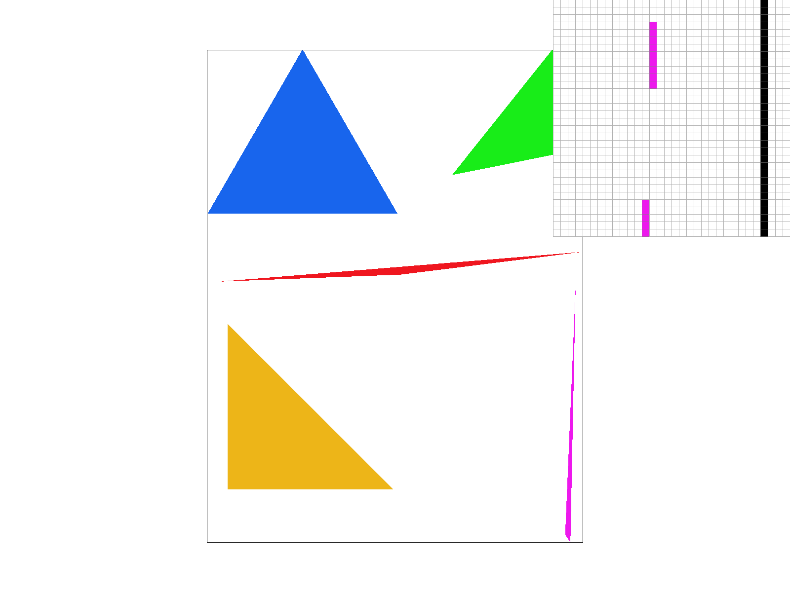 |
|
|
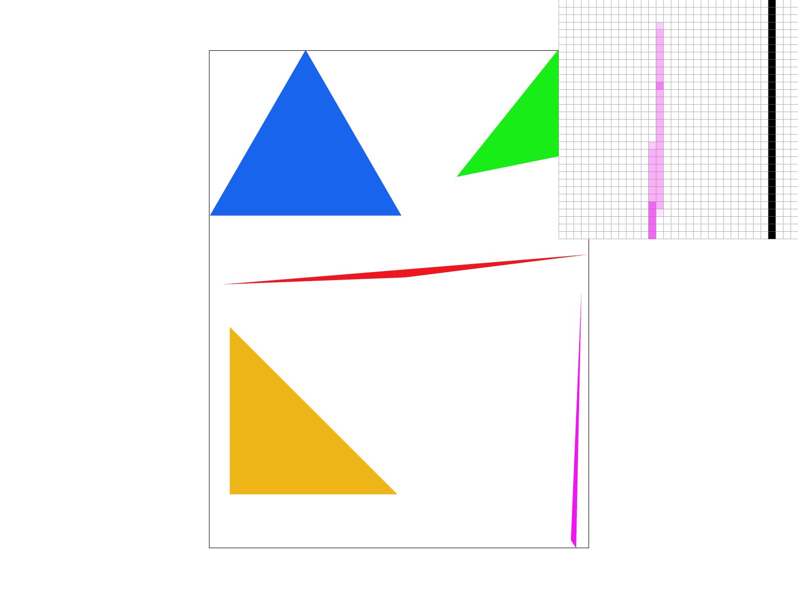 |
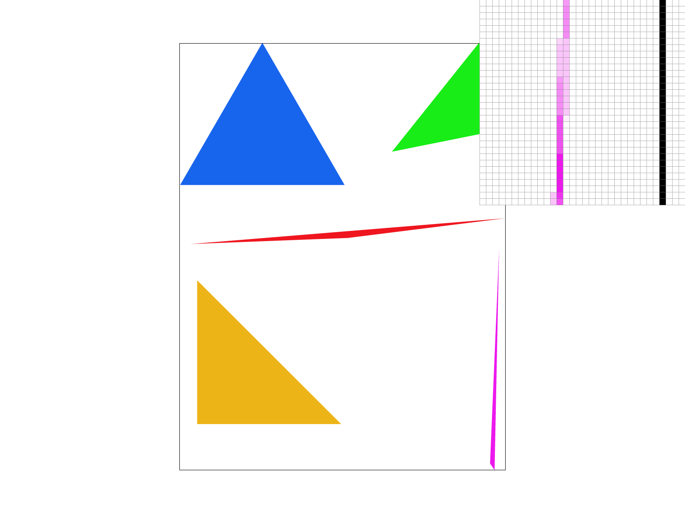 |
Task 3: Transforms
To implement transformations, I modified the transforms.cpp file. There are three different 3x3 matrices that I implemented, which were from lecture. I added the translation matrix, which moves an object a certain x or y. Then, there is the scale matrix, which scales x in a certain size and y a certain size. Finally there is the rotation matrix. The input was in degrees counterclockwise. However, I believe c++ deals with radians, so to compute sines and cosines, I converted the degree input to radians and then computed the rotation matrix (which has sine and cosine terms).
With my modified cube man, I wanted him to look like he was jumping. I also modified colors and created a few of my own shapes so he’d look more connected. Eyes too. I used all three of the transformations for these changes.
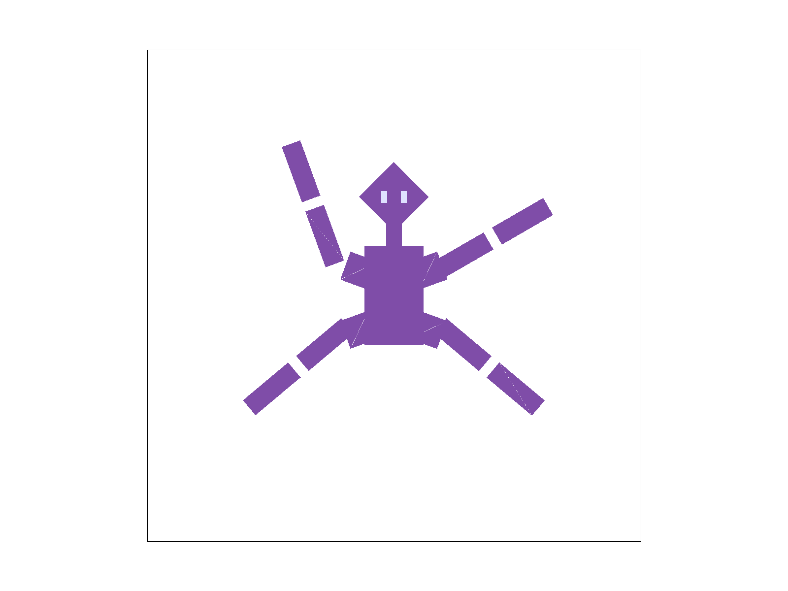
Extra Credit
I added two keys to the hotbar that would let you rotate the image in the GUI. The R key rotates left, the T key rotates right. To implement this, first I added cases for pressing R and T in DrawRend::keyboard_event. I also added a rotation variable called theta to keep track of what direction the image is rotated in. I added a method called update_view_matrix(), which builds a new svg to ndc matrix that includes rotation. In the existing function set_view_method(), instead of directly setting the view matrix, I update new variables called view_x, view_y, and view_span, and calls the new update_view_matrix() function. In the view_init() function, the view_angle is reset to 0 and it calls update_view_matrix().
The main logic was in update_view_matrix(). I build the matrix with matrix multiplication. First I translated the point to the origin, because rotation happens relative to the origin, and this way nothing would rotate strangely/across a different axis. Then I applied the rotation based on theta (that we had recorded from keypresses). Then I translated back to the original point, and finally scaled the coordinates. To scale, I used the view_span variable, which represents how much of the scene is visible, to scale the coordinates. Scaling also handled the final shift to make sure the coords fit with ndc.
If you press a key to rotate the view in the GUI, theta changes, and update_view_matrix() is called to regenerate the matrix. When you later call rasterize_triangle(), the vertex positions are multiplied by the svg_to_ndc matrix so they appear at the correct position.
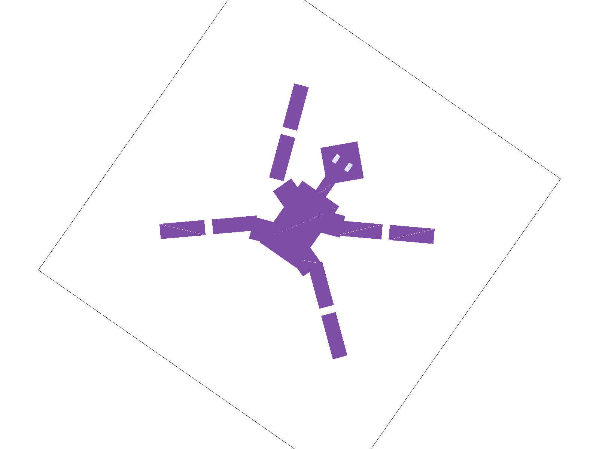
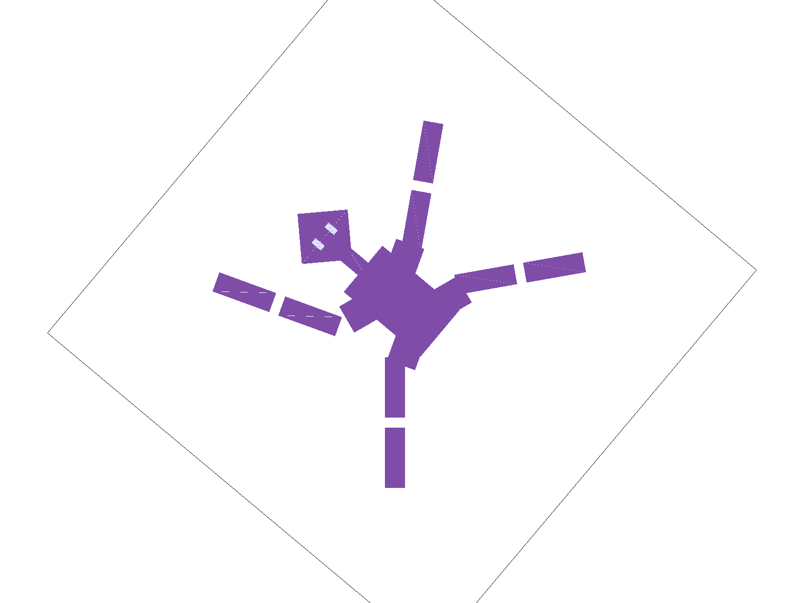
Task 4: Barycentric coordinates
Barycentric coordinates represent the influence of each vertex on a point. In rasterization, the data for vertices Va, Vb, and Vc are known, but the pixels in between the vertices need to be filled in. Barycentric coordinates provide a coordinate system relative to the triangles shape to fill in this data; this is interpolation.
The coordinate system works as follows:
- Every point P inside a triangle can be defined by three weights, a, b, and c (more commonly referred to as alpha, beta, and gamma). These represent how much influence each vertex has on that point.
- a + b + c = 1
- If all three weights are between 0 and 1, the point is inside the triangle. If any weight is negative, the point is outside the triangle.
Interpolation works because if you know a property at a vertex, like a color or texture coordinate, you can calculate the value at point P by multiplying the vertex values and their weights. For example, consider: vertex A is red, B is green, C is blue. If a pixel is in the center, its barycentric coordinates would be (1/3, 1/3, 1/3). If the pixel is very close to A, weight a might be 0.9, so the pixel color would be very reddish. Barycentric interpolation is used for smooth shading, texture mapping, and z-buffer.
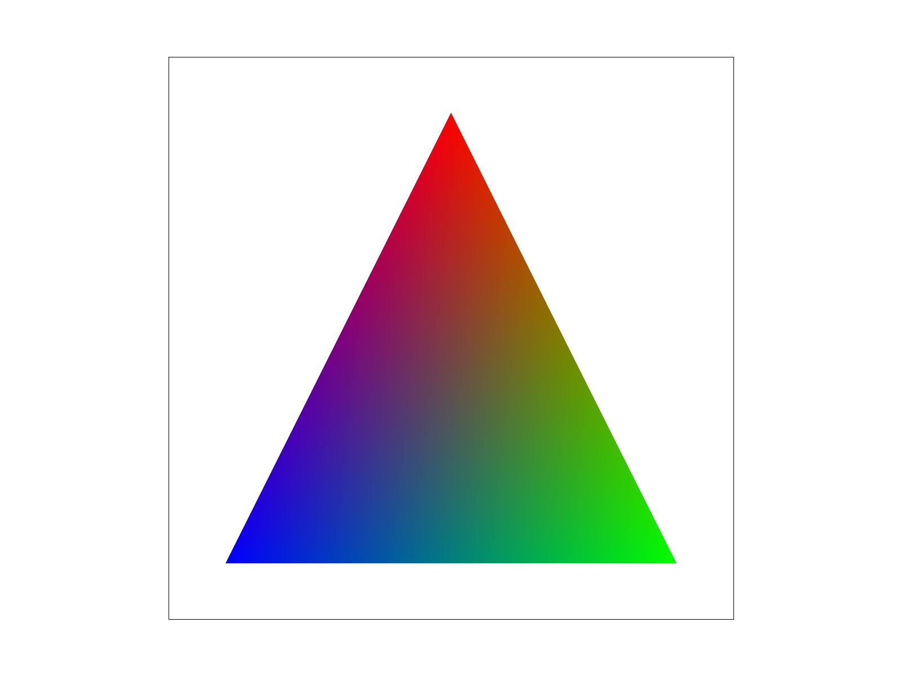
To implement barycentric coordinates, I used line equations. I basically aimed to measure how far a point is from an edge to determine how close it is to the opposite vertex. So the barycentric coordinate ‘a’ for vertex A is proportional to the distance of point P from the edge BC (opposite to A).
First, I copied the existing rasterize_triangle method. Then I defined the edges for the triangle. (dx0, dy0) is edge A to B. (dx1,dy1) is edge B to C. (dx2, dy2) is edge C to A. Then, for any point (x,y), I calculated the edge function value: \(L(x,y) = -(x - X_i) * dy_i + (y - Y_i) * dx_i\). After, I had to ensure that the barycentric coordinates would sum to 1. So I divided the edge function value at the current pixel by the value of the same edge function at the opposite vertex.
- a_eq: evaluates the edge function for BC using A.
- b_eq: evaluates the edge function for CA using B.
- c_eq: evaluates the edge function for AB using C.
In my loop, for each pixel (x, y), I calculate the distances, then divide to get the weights a, b, and c. Finally, I calculate the final color using the weights and the input colors.
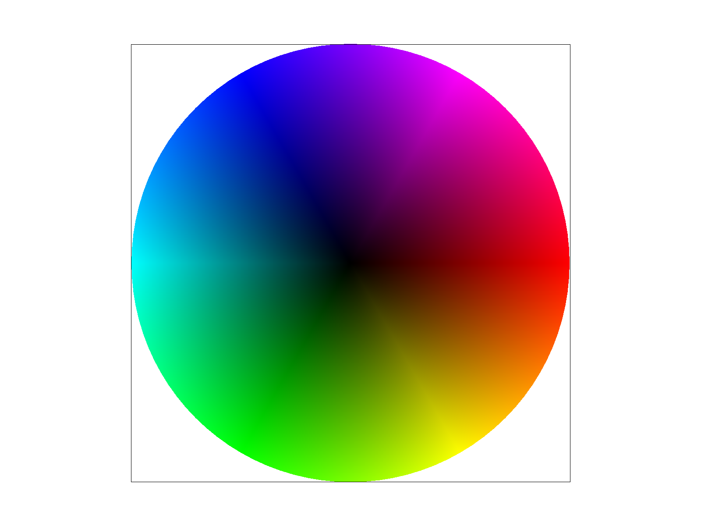
Task 5: "Pixel sampling" for texture mapping
Pixel sampling is the process of converting an image into a set of pixels, by measuring color and brightness at specific points. It determines image resolution and detail. Higher sampling rates mean sharper images. Basically, it is deciding what color a pixel should be when the true image is continuous.
In texture mapping, consider if you have a triangle with a texture applied, and there is a pixel in the triangle. First, you rasterize and compute the UV coordinate of that pixel, aka what its location would be inside the texture. In order to find what color in the texture corresponds to the UV coordinate, you need to sample the texture.
The nearest sampling method is when you pick the closest texel. It ends up being sharp. The bilinear sampling method is when you blend the 4 neighboring texels, and it ends up being smooth.
To implement this, I:
- calculated the Barycentric coordinates for every sub pixel inside the sample relative to the triangle’s vertices.
- did a weighted sum of the (u, v) coordinates, so \(u = a*u0 + b*u1 + c*u\) and \(v = a*v0 + b*v1 + c*v\) to give me the location on the texture for that sub pixel.
- passed the updated coordinates and the pixel sample method into the sample() function.
- had the sample() function look up the color using sample_nearest() or sample_bilinear().
- stored the resulting color in sample_buffer.
In nearest sampling, I mapped the normalized UV coordinates to the actual dimensions of the texture (by multiplying by height and width), and then accessed the color at that specific coordinate by using get_texel().
In bilinear sampling, I again normalized the UV coordinates to the actual dimensions. I used floor() and ceil() to find the four coordinates that surrounded my sample point. Then I did 3 linear interpolations:
- horizontal: the top left and top right texels to get intermediary color u0
- horizontal: the bottom left and bottom right texels to get intermediary color u1
- vertical: u0 and u1, to get to the final color
I returned the final color.
The difference is the significant when you zoom in closely on a texture. Nearest sampling will show distinct squares, whereas bilinear sampling will calculate a gradient between these squares. It is also clear when there are sharp transitions in a texture. Nearest will preserve these harsh edges, but bilinear will make it somewhat blurry. In these, bilinear smooths over a lot of the harsh edges, whereas nearest has sharp edges.
Nearest vs. Bilinear
|
|
|
|
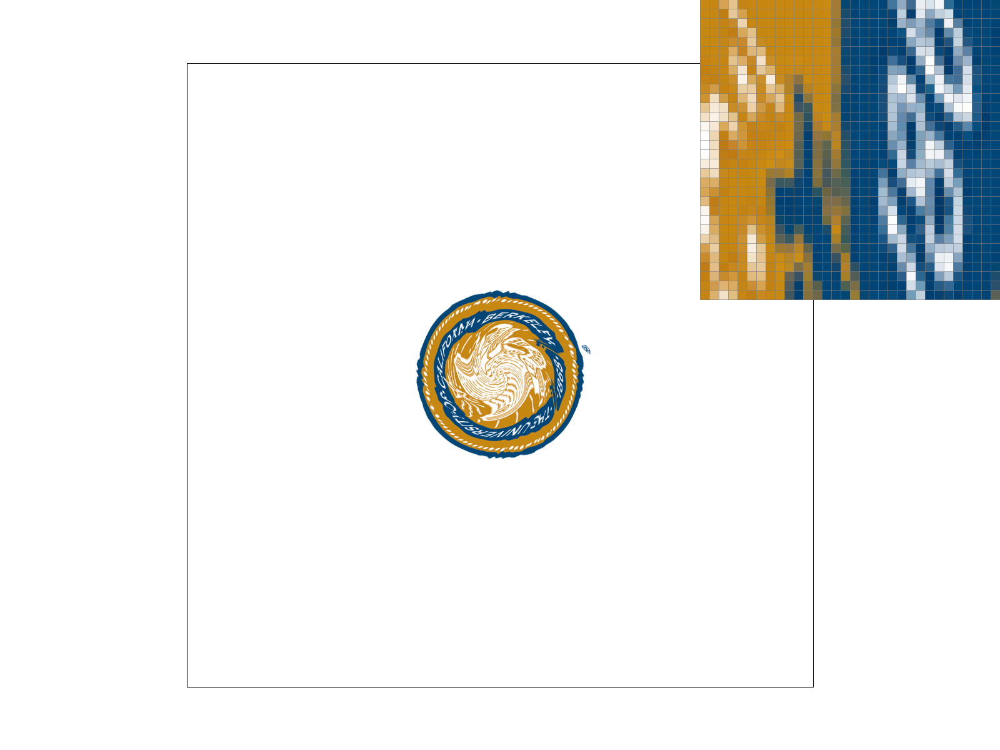 |
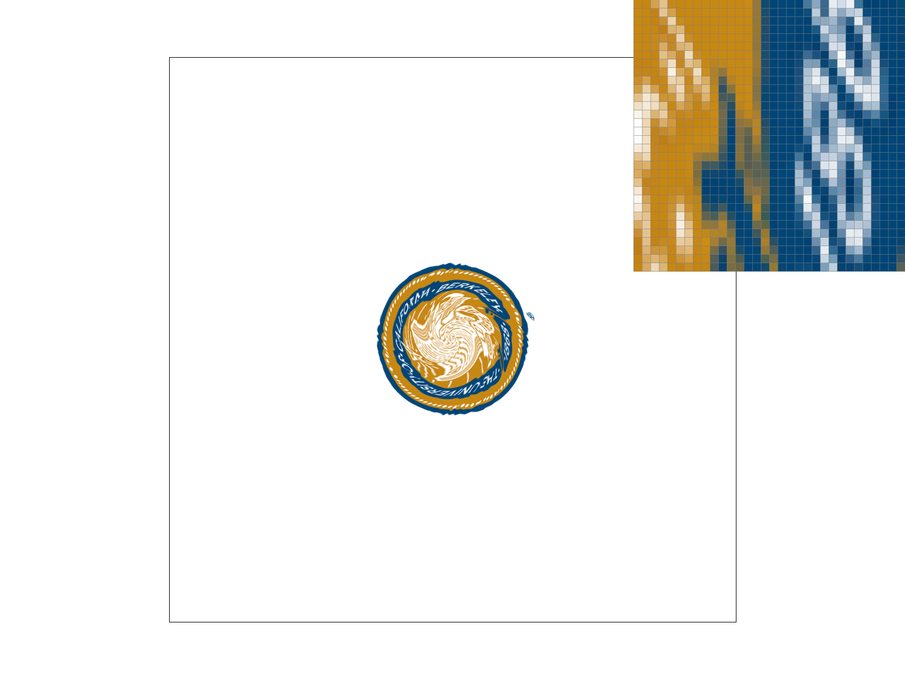 |
Task 6: "Level Sampling" with mipmaps for texture mapping
Level sampling is choosing which mipmap level to use when sampling a texture. Mipmaps are precomputed, filtered versions of the texture, and it has levels. When a triangle with a texture is further away on the screen or very small, many texels will map to one pixel, and sampling from an unfiltered version of the texture would cause aliasing and shimmering. Level sampling uses the rate of change of the texture coordinates UV with respect to screen space to pick a resolution/level. If UV changes a lot per pixel, we use a more detailed level, and if it changes only a little, then we use a lower level. This reduces aliasing and keeps the image stable.
In rasterize_textured_triangle(), as a continuation of task 5, for each sample point (sx, sy) in the triangle, I compute the barycentric coordinates a, b, and c from the edge equations (using the same a_eq, b_eq, c_eq). Then I use them to compute u and v as texture coordinates (via linear interpolation). sp.p_uv is the (u, v) at the current sample point (sx, sy). Then, I evaluated the same edge equations at (sx+1, sy), and (sx, sy+1), which give new derivatives for the edge equations. Then use psm and lsm to check whether to use L_ZERO, L_NEAREST, and L_LINEAR.
In texture.cpp, we decide which mip levels to use and call the pixel sampling functions. I perform checks to see what mip level to use, and then use get_level() to see how much the texture is changed at this pixel. get_level() returns mip level D (via the equations from lecture). Then we pass D into sample_nearest() and sample_bilinear.
Pixel sampling chooses how to filter within one mip level, so memory is the same. It reduces jagged edges and sharp edges for antialiasing. P_NEAREST is faster since it deals with one texel. Level sampling chooses which mip level to use and whether to blend two levels. L_ZERO is fastest. Level sampling reduces shimmer, and L_LINEAR has smoother blending. Supersampling takes multiple samples per pixel, so it is a bit slower. Memory is also higher, since there has to be space for all the sub pixels. As for antialiasing, it has smoother edges and reduces moire.
|
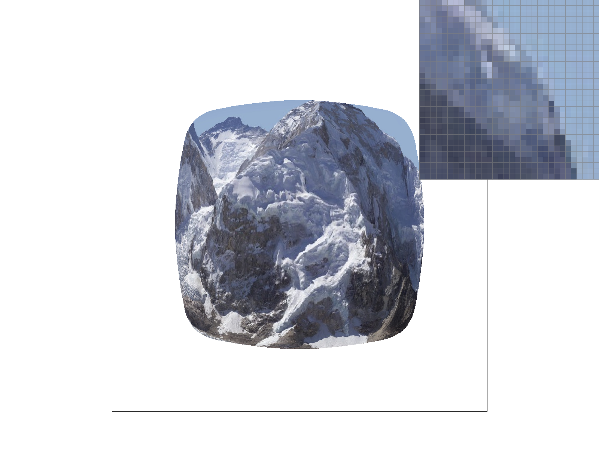 |
|
|
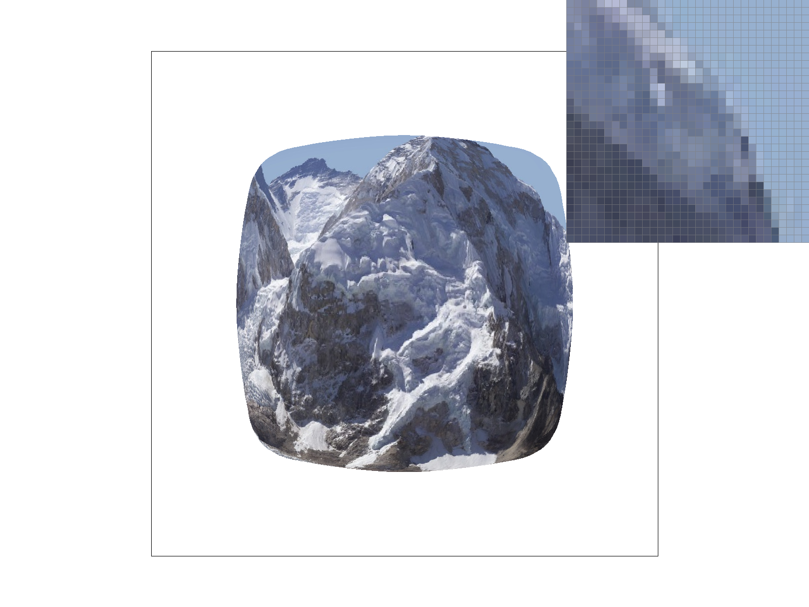 |
|